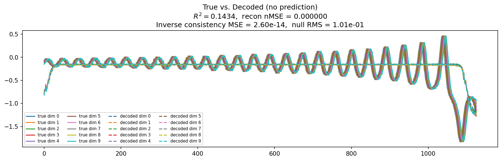
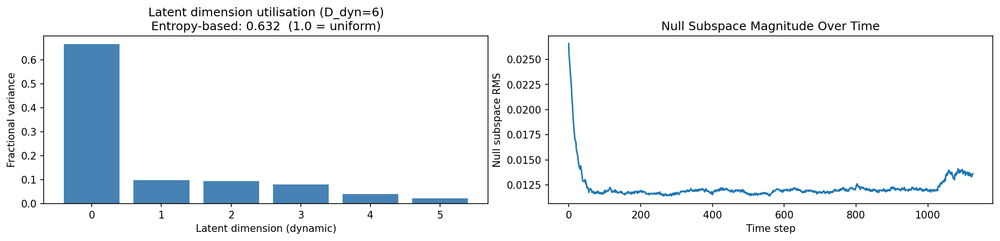
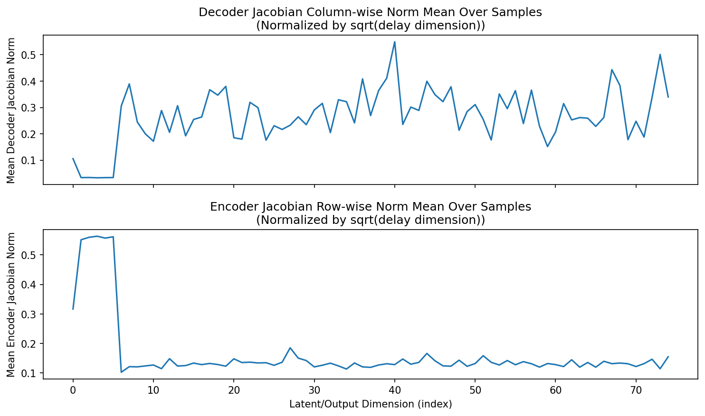
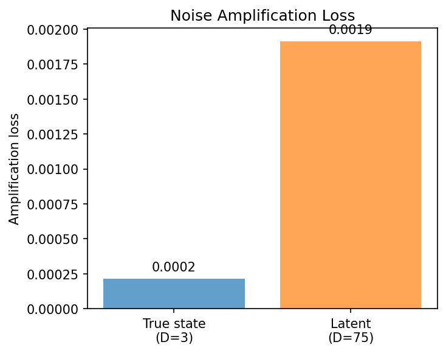
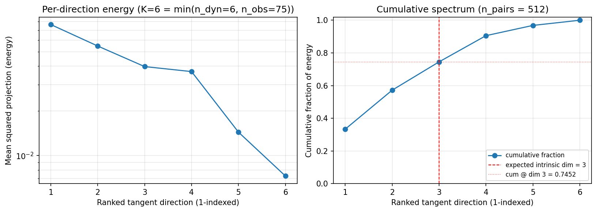
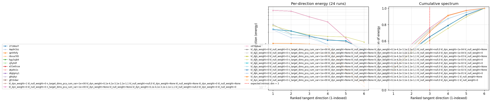

lorenz_partial_additive_encoderonly_nd75_init15_pcainit_autodim__kl_sweep_obsnoise001Project: Lorenz_INDpartial_NDInitSweep_autodim_D1_NormTrue__JacobianODE
Launched: 2026-04-22T19:50:11Z
Completed: 2026-04-22T20:15:18Z
Outcome: complete_clean
Git: latent-JacobianODE @ f909fc3
Expected runs: 12
lorenz_partial_additive_encoderonly_nd75_init15_pcainit_autodim__kl_sweep_obsnoise001Description
Lorenz partial additive coupling, obs_noise=0.01, n_delays=75, traj_init_steps=15 (only governs dataloader seq_length, not training). encoder_only_mode=true → training + validation skip all dynamics work and use only recon + KL losses. init_pca_basis=true → encoder starts as the PCA rotation V. use_vae=true so kl_dyn_weight has teeth. 12-run sweep: 6 kl_dyn_weight × 2 kl_null_weight. Analytics includes the new tangent_spectrum section: per-point latent tangents (z_{t+1} - z_t) projected onto encoder Jacobian columns, ranked by magnitude, averaged over val set. For the true 3-dim Lorenz attractor, we expect the top 3 components to carry most of the energy.
Hypothesis
With PCA-basis init the encoder already reconstructs cleanly. The KL regularizers shape the latent geometry: kl_null pushes z_null → 0, concentrating representation on z_dyn; kl_dyn (VAE Gaussian KL on z_dyn) encourages smooth/Gaussian latent codes. Too much kl_dyn will collapse the latent entirely; too little gives no shaping benefit. Prior: best val/recon_loss at small-to-mid kl_dyn (~1e-4 to 1e-2), kl_null=0 (let z_null stay untouched since PCA already picked the right subspace). The tangent_spectrum should concentrate on the top 3 directions at every KL weight, since Lorenz is intrinsically 3-dim — this is a check on the encoder, not on the KL choice.
Success criteria
Swept axes (9): model.kl_dyn_weight, model.kl_null_weight, model.n_target_dims_pca_cum_var, sweep_grid.model.kl_dyn_weight, sweep_grid.model.kl_null_weight, sweep_grid.training.lightning.kl_dyn_weight, sweep_grid.training.lightning.kl_null_weight, training.lightning.kl_dyn_weight, training.lightning.kl_null_weight
Chosen run (by best_traj_loss): 8zj4cex3 — traj_loss=0.00015, MASE=—, R²=—, LC loss=—, epoch=27.0
Swept-axis values at chosen run: model.kl_dyn_weight=1 · model.kl_null_weight=0 · model.n_target_dims_pca_cum_var=0.993244 · sweep_grid.model.kl_dyn_weight=0,1e-4,1e-3,1e-2,1e-1,1 · sweep_grid.model.kl_null_weight=null,0 · sweep_grid.training.lightning.kl_dyn_weight=None · sweep_grid.training.lightning.kl_null_weight=None · training.lightning.kl_dyn_weight=0 · training.lightning.kl_null_weight=None
⚠️ 1 run_idx slot(s) had multiple matching wandb runs — the best by best_traj_loss was kept; the others are listed below for audit:
- run_idx=0: chose 8zj4cex3, dropped 27186ol7, 4ap9r1kz, qznhfxfy, r8vva785, hgy3ujb9, cjfiyh0f, e31w0cua, atja9o1s, z8glgmy1, gl4zjkyi, gf33rdwr, rd79ubau
Runs analyzed: 12 (expected 12)
| run_idx | run_id | model.kl_dyn_weight |
model.kl_null_weight |
model.n_target_dims_pca_cum_var |
sweep_grid.model.kl_dyn_weight |
sweep_grid.model.kl_null_weight |
sweep_grid.training.lightning.kl_dyn_weight |
sweep_grid.training.lightning.kl_null_weight |
training.lightning.kl_dyn_weight |
training.lightning.kl_null_weight |
best_traj_loss | best_MASE | R² | LC loss | epoch |
|---|---|---|---|---|---|---|---|---|---|---|---|---|---|---|---|
| 0 | 8zj4cex3 |
1 | 0 | 0.993244 | 0,1e-4,1e-3,1e-2,1e-1,1 | null,0 | None | None | 0 | None | 0.00015 | — | — | — | 27.0 |
| 1 | 4bxmlexd |
0 | 0 | 0.993244 | None | None | 0,1e-4,1e-3,1e-2,1e-1,1 | null,0 | 0 | 0 | 0.00015 | — | — | — | 27.0 |
| 3 | pjofmq14 |
0 | 0 | 0.993244 | None | None | 0,1e-4,1e-3,1e-2,1e-1,1 | null,0 | 1.0e-04 | 0 | 0.00053 | — | — | — | 25.0 |
| 2 | 5xvgafig |
0 | 0 | 0.993244 | None | None | 0,1e-4,1e-3,1e-2,1e-1,1 | null,0 | 1.0e-04 | None | 0.00053 | — | — | — | 25.0 |
| 4 | n3hdxweu |
0 | 0 | 0.993244 | None | None | 0,1e-4,1e-3,1e-2,1e-1,1 | null,0 | 0.001 | None | 0.00206 | — | — | — | 81.0 |
| 5 | dvurm0a3 |
0 | 0 | 0.993244 | None | None | 0,1e-4,1e-3,1e-2,1e-1,1 | null,0 | 0.001 | 0 | 0.00206 | — | — | — | 81.0 |
| 7 | k08enmzr |
0 | 0 | 0.993244 | None | None | 0,1e-4,1e-3,1e-2,1e-1,1 | null,0 | 0.01 | 0 | 0.01126 | — | — | — | 134.0 |
| 6 | sumx80s7 |
0 | 0 | 0.993244 | None | None | 0,1e-4,1e-3,1e-2,1e-1,1 | null,0 | 0.01 | None | 0.01127 | — | — | — | 134.0 |
| 8 | m9fg93nr |
0 | 0 | 0.993244 | None | None | 0,1e-4,1e-3,1e-2,1e-1,1 | null,0 | 0.1 | None | 0.06320 | — | — | — | 133.0 |
| 9 | eex1qkao |
0 | 0 | 0.993244 | None | None | 0,1e-4,1e-3,1e-2,1e-1,1 | null,0 | 0.1 | 0 | 0.06750 | — | — | — | 100.0 |
| 11 | 4m066r9j |
0 | 0 | 0.993244 | None | None | 0,1e-4,1e-3,1e-2,1e-1,1 | null,0 | 1 | 0 | 0.32450 | — | — | — | 126.0 |
| 10 | d7fb7pd9 |
0 | 0 | 0.993244 | None | None | 0,1e-4,1e-3,1e-2,1e-1,1 | null,0 | 1 | None | 0.32520 | — | — | — | 125.0 |
| Criterion | Verdict | Note |
|---|---|---|
| All 12 runs train without divergence (val/recon_loss finite throughout) | Unknown | |
| Best val/recon_loss achieved at some kl_dyn in {1e-4, 1e-3, 1e-2} | Unknown | |
| Top 3 components of the tangent spectrum at the best run carry >= 95% of energy | Unknown | |
| Cumulative tangent energy at dim 3 is higher than at the worst run | Unknown |
Automated verdicts use simple numeric-threshold parsing and may mis-classify qualitative criteria. The Discussion section below takes precedence.






(to be written)
run_analytics stdoutrun_analyticsNo run_id provided — selecting best run from group 'lorenz_partial_additive_encoderonly_nd75_init15_pcainit_autodim__kl_sweep_obsnoise001' ...
Found 24 total runs in JacobianODE/Lorenz_INDpartial_NDInitSweep_autodim_D1_NormTrue__JacobianODE (group=lorenz_partial_additive_encoderonly_nd75_init15_pcainit_autodim__kl_sweep_obsnoise001)
All runs (state, loop_closure_weight, tangent_entropy_weight, kl_dyn_weight):
27186ol7: state=finished, lc=0.0, te=0.0, kl_dyn=0.0
4ap9r1kz: state=finished, lc=0.0, te=0.0, kl_dyn=0.0
qznhfxfy: state=finished, lc=0.0, te=0.0, kl_dyn=0.0
r8vva785: state=finished, lc=0.0, te=0.0, kl_dyn=0.0
hgy3ujb9: state=finished, lc=0.0, te=0.0, kl_dyn=0.0
cjfiyh0f: state=finished, lc=0.0, te=0.0, kl_dyn=0.0
e31w0cua: state=finished, lc=0.0, te=0.0, kl_dyn=0.0
atja9o1s: state=finished, lc=0.0, te=0.0, kl_dyn=0.0
z8glgmy1: state=finished, lc=0.0, te=0.0, kl_dyn=0.0
gl4zjkyi: state=finished, lc=0.0, te=0.0, kl_dyn=0.0
gf33rdwr: state=finished, lc=0.0, te=0.0, kl_dyn=0.0
8zj4cex3: state=finished, lc=0.0, te=0.0, kl_dyn=0.0
4bxmlexd: state=finished, lc=0.0, te=0.0, kl_dyn=0.0
rd79ubau: state=finished, lc=0.0, te=0.0, kl_dyn=0.0
5xvgafig: state=finished, lc=0.0, te=0.0, kl_dyn=0.0001
pjofmq14: state=finished, lc=0.0, te=0.0, kl_dyn=0.0001
n3hdxweu: state=finished, lc=0.0, te=0.0, kl_dyn=0.001
dvurm0a3: state=finished, lc=0.0, te=0.0, kl_dyn=0.001
k08enmzr: state=finished, lc=0.0, te=0.0, kl_dyn=0.01
m9fg93nr: state=finished, lc=0.0, te=0.0, kl_dyn=0.1
sumx80s7: state=finished, lc=0.0, te=0.0, kl_dyn=0.01
eex1qkao: state=finished, lc=0.0, te=0.0, kl_dyn=0.1
d7fb7pd9: state=finished, lc=0.0, te=0.0, kl_dyn=1.0
4m066r9j: state=finished, lc=0.0, te=0.0, kl_dyn=1.0
slurm_timeout_min not found in any run config — falling back to 180 min
Including 27186ol7 (lc=0.0): use_all_runs=True (state=finished)
Including 4ap9r1kz (lc=0.0): use_all_runs=True (state=finished)
Including qznhfxfy (lc=0.0): use_all_runs=True (state=finished)
Including r8vva785 (lc=0.0): use_all_runs=True (state=finished)
Including hgy3ujb9 (lc=0.0): use_all_runs=True (state=finished)
Including cjfiyh0f (lc=0.0): use_all_runs=True (state=finished)
Including e31w0cua (lc=0.0): use_all_runs=True (state=finished)
Including atja9o1s (lc=0.0): use_all_runs=True (state=finished)
Including z8glgmy1 (lc=0.0): use_all_runs=True (state=finished)
Including gl4zjkyi (lc=0.0): use_all_runs=True (state=finished)
Including gf33rdwr (lc=0.0): use_all_runs=True (state=finished)
Including 8zj4cex3 (lc=0.0): use_all_runs=True (state=finished)
Including 4bxmlexd (lc=0.0): use_all_runs=True (state=finished)
Including rd79ubau (lc=0.0): use_all_runs=True (state=finished)
Including 5xvgafig (lc=0.0): use_all_runs=True (state=finished)
Including pjofmq14 (lc=0.0): use_all_runs=True (state=finished)
Including n3hdxweu (lc=0.0): use_all_runs=True (state=finished)
Including dvurm0a3 (lc=0.0): use_all_runs=True (state=finished)
Including k08enmzr (lc=0.0): use_all_runs=True (state=finished)
Including m9fg93nr (lc=0.0): use_all_runs=True (state=finished)
Including sumx80s7 (lc=0.0): use_all_runs=True (state=finished)
Including eex1qkao (lc=0.0): use_all_runs=True (state=finished)
Including d7fb7pd9 (lc=0.0): use_all_runs=True (state=finished)
Including 4m066r9j (lc=0.0): use_all_runs=True (state=finished)
Found 24 effectively-done sweep runs:
loop_closure_weight=0.0, tangent_entropy_weight=0.0, kl_dyn_weight=0.0 -> run_id=27186ol7
loop_closure_weight=0.0, tangent_entropy_weight=0.0, kl_dyn_weight=0.0 -> run_id=4ap9r1kz
loop_closure_weight=0.0, tangent_entropy_weight=0.0, kl_dyn_weight=0.0 -> run_id=4bxmlexd
loop_closure_weight=0.0, tangent_entropy_weight=0.0, kl_dyn_weight=0.0 -> run_id=8zj4cex3
loop_closure_weight=0.0, tangent_entropy_weight=0.0, kl_dyn_weight=0.0 -> run_id=atja9o1s
loop_closure_weight=0.0, tangent_entropy_weight=0.0, kl_dyn_weight=0.0 -> run_id=cjfiyh0f
loop_closure_weight=0.0, tangent_entropy_weight=0.0, kl_dyn_weight=0.0 -> run_id=e31w0cua
loop_closure_weight=0.0, tangent_entropy_weight=0.0, kl_dyn_weight=0.0 -> run_id=gf33rdwr
loop_closure_weight=0.0, tangent_entropy_weight=0.0, kl_dyn_weight=0.0 -> run_id=gl4zjkyi
loop_closure_weight=0.0, tangent_entropy_weight=0.0, kl_dyn_weight=0.0 -> run_id=hgy3ujb9
loop_closure_weight=0.0, tangent_entropy_weight=0.0, kl_dyn_weight=0.0 -> run_id=qznhfxfy
loop_closure_weight=0.0, tangent_entropy_weight=0.0, kl_dyn_weight=0.0 -> run_id=r8vva785
loop_closure_weight=0.0, tangent_entropy_weight=0.0, kl_dyn_weight=0.0 -> run_id=rd79ubau
loop_closure_weight=0.0, tangent_entropy_weight=0.0, kl_dyn_weight=0.0 -> run_id=z8glgmy1
loop_closure_weight=0.0, tangent_entropy_weight=0.0, kl_dyn_weight=0.0001 -> run_id=5xvgafig
loop_closure_weight=0.0, tangent_entropy_weight=0.0, kl_dyn_weight=0.0001 -> run_id=pjofmq14
loop_closure_weight=0.0, tangent_entropy_weight=0.0, kl_dyn_weight=0.001 -> run_id=dvurm0a3
loop_closure_weight=0.0, tangent_entropy_weight=0.0, kl_dyn_weight=0.001 -> run_id=n3hdxweu
loop_closure_weight=0.0, tangent_entropy_weight=0.0, kl_dyn_weight=0.01 -> run_id=k08enmzr
loop_closure_weight=0.0, tangent_entropy_weight=0.0, kl_dyn_weight=0.01 -> run_id=sumx80s7
loop_closure_weight=0.0, tangent_entropy_weight=0.0, kl_dyn_weight=0.1 -> run_id=eex1qkao
loop_closure_weight=0.0, tangent_entropy_weight=0.0, kl_dyn_weight=0.1 -> run_id=m9fg93nr
loop_closure_weight=0.0, tangent_entropy_weight=0.0, kl_dyn_weight=1.0 -> run_id=4m066r9j
loop_closure_weight=0.0, tangent_entropy_weight=0.0, kl_dyn_weight=1.0 -> run_id=d7fb7pd9
n_dims=75, n_latent=75, n_dyn=6, dt=0.0150
run=27186ol7: DiagnosticMetrics(one_step_mase=1.2945316104580618, loop_closure_loss=0.14122921034693717, fast_eigenvalue_fraction=0.0, trajectory_val_loss=0.3894668708741665) (from cache, n_batches=100)
run=4ap9r1kz: DiagnosticMetrics(one_step_mase=1.2945316104580618, loop_closure_loss=0.1359363866597414, fast_eigenvalue_fraction=0.0, trajectory_val_loss=0.3894668708741665) (from cache, n_batches=100)
run=4bxmlexd: DiagnosticMetrics(one_step_mase=1.2945316104580618, loop_closure_loss=0.1359363866597414, fast_eigenvalue_fraction=0.0, trajectory_val_loss=0.3894668708741665) (from cache, n_batches=100)
run=8zj4cex3: DiagnosticMetrics(one_step_mase=1.2944027156588336, loop_closure_loss=0.13512945093214512, fast_eigenvalue_fraction=0.0, trajectory_val_loss=0.3894693192839622) (from cache, n_batches=100)
run=atja9o1s: DiagnosticMetrics(one_step_mase=1.2945316104580618, loop_closure_loss=0.1359363866597414, fast_eigenvalue_fraction=0.0, trajectory_val_loss=0.3894668708741665) (from cache, n_batches=100)
run=cjfiyh0f: DiagnosticMetrics(one_step_mase=1.2945316104580618, loop_closure_loss=0.1359363866597414, fast_eigenvalue_fraction=0.0, trajectory_val_loss=0.3894668708741665) (from cache, n_batches=100)
run=e31w0cua: DiagnosticMetrics(one_step_mase=1.2945316104580618, loop_closure_loss=0.1359363866597414, fast_eigenvalue_fraction=0.0, trajectory_val_loss=0.3894668708741665) (from cache, n_batches=100)
run=gf33rdwr: DiagnosticMetrics(one_step_mase=1.2945316104580618, loop_closure_loss=0.1359363866597414, fast_eigenvalue_fraction=0.0, trajectory_val_loss=0.3894668708741665) (from cache, n_batches=100)
run=gl4zjkyi: DiagnosticMetrics(one_step_mase=1.2945316104580618, loop_closure_loss=0.1359363866597414, fast_eigenvalue_fraction=0.0, trajectory_val_loss=0.3894668708741665) (from cache, n_batches=100)
run=hgy3ujb9: DiagnosticMetrics(one_step_mase=1.2945316104580618, loop_closure_loss=0.1359363866597414, fast_eigenvalue_fraction=0.0, trajectory_val_loss=0.3894668708741665) (from cache, n_batches=100)
run=qznhfxfy: DiagnosticMetrics(one_step_mase=1.2945316104580618, loop_closure_loss=0.1359363866597414, fast_eigenvalue_fraction=0.0, trajectory_val_loss=0.3894668708741665) (from cache, n_batches=100)
run=r8vva785: DiagnosticMetrics(one_step_mase=1.2945316104580618, loop_closure_loss=0.1359363866597414, fast_eigenvalue_fraction=0.0, trajectory_val_loss=0.3894668708741665) (from cache, n_batches=100)
run=rd79ubau: DiagnosticMetrics(one_step_mase=1.2945316104580618, loop_closure_loss=0.1359363866597414, fast_eigenvalue_fraction=0.0, trajectory_val_loss=0.3894668708741665) (from cache, n_batches=100)
run=z8glgmy1: DiagnosticMetrics(one_step_mase=1.2945316104580618, loop_closure_loss=0.1359363866597414, fast_eigenvalue_fraction=0.0, trajectory_val_loss=0.3894668708741665) (from cache, n_batches=100)
run=5xvgafig: DiagnosticMetrics(one_step_mase=1.3079298825650665, loop_closure_loss=0.002251111769583076, fast_eigenvalue_fraction=0.0, trajectory_val_loss=0.3791333808004856) (from cache, n_batches=100)
run=pjofmq14: DiagnosticMetrics(one_step_mase=1.3079266719786211, loop_closure_loss=0.0022498222097055987, fast_eigenvalue_fraction=0.0, trajectory_val_loss=0.37912817850708963) (from cache, n_batches=100)
run=dvurm0a3: DiagnosticMetrics(one_step_mase=1.3147271062089958, loop_closure_loss=0.00036091021029278637, fast_eigenvalue_fraction=0.0, trajectory_val_loss=0.3908407986164093) (from cache, n_batches=100)
run=n3hdxweu: DiagnosticMetrics(one_step_mase=1.3146320090938866, loop_closure_loss=0.0003610175818175776, fast_eigenvalue_fraction=0.0, trajectory_val_loss=0.3906232184171677) (from cache, n_batches=100)
run=k08enmzr: DiagnosticMetrics(one_step_mase=1.3466518009885613, loop_closure_loss=0.0002310043450415833, fast_eigenvalue_fraction=0.0, trajectory_val_loss=0.362663614153862) (from cache, n_batches=100)
run=sumx80s7: DiagnosticMetrics(one_step_mase=1.346407750878481, loop_closure_loss=0.00023064904002239927, fast_eigenvalue_fraction=0.0, trajectory_val_loss=0.36188300475478175) (from cache, n_batches=100)
run=eex1qkao: DiagnosticMetrics(one_step_mase=3.345390357020158, loop_closure_loss=7.937707281598705e-05, fast_eigenvalue_fraction=0.0, trajectory_val_loss=0.1843742759525776) (from cache, n_batches=100)
run=m9fg93nr: DiagnosticMetrics(one_step_mase=3.0969508211962107, loop_closure_loss=6.939768388292578e-05, fast_eigenvalue_fraction=0.0, trajectory_val_loss=0.20860701270401477) (from cache, n_batches=100)
run=4m066r9j: DiagnosticMetrics(one_step_mase=6.568747048860058, loop_closure_loss=1.3240512367929114e-06, fast_eigenvalue_fraction=0.0, trajectory_val_loss=0.05880431279540062) (from cache, n_batches=100)
run=d7fb7pd9: DiagnosticMetrics(one_step_mase=6.4638997910604985, loop_closure_loss=1.4631022008870787e-06, fast_eigenvalue_fraction=0.0, trajectory_val_loss=0.0578452311642468) (from cache, n_batches=100)
Ranking method: best_traj_loss
Best run ID: d7fb7pd9
Best loop_closure_weight: 0.0
Best tangent_entropy_weight: 0.0
Best kl_dyn_weight: 1.0
Best traj loss: 0.057845
Criteria applied: ['C3']
Surviving: 24 / 24
Auto-selected run_id: d7fb7pd9
======================================================================
PARETO FRONTIER RUNS (2 runs)
======================================================================
Run ID LC Loss Traj Val Loss
------------ -------------- --------------
4m066r9j 0.000001 0.058804
d7fb7pd9 0.000001 0.057845 <-- selected
======================================================================
RANKING METHOD COMPARISON (over 24 survivors)
======================================================================
Method Run ID LC Loss Traj Val Loss
---------------------- ------------ -------------- --------------
best_traj_loss d7fb7pd9 0.000001 0.057845 <-- active
pareto_knee 4m066r9j 0.000001 0.058804
geo_rank 4m066r9j 0.000001 0.058804
minimax_rank 4m066r9j 0.000001 0.058804
geo_log_score 4m066r9j 0.000001 0.058804
minimax_log_score 4m066r9j 0.000001 0.058804
======================================================================
Loading run d7fb7pd9 from JacobianODE/Lorenz_INDpartial_NDInitSweep_autodim_D1_NormTrue__JacobianODE ...
Train dataset shape: torch.Size([23782, 45, 75])
Validation dataset shape: torch.Size([7567, 45, 75])
Test dataset shape: torch.Size([3243, 45, 75])
Train trajectories dataset shape: torch.Size([22, 1126, 75])
Validation trajectories dataset shape: torch.Size([7, 1126, 75])
Test trajectories dataset shape: torch.Size([3, 1126, 75])
Loading checkpoint epoch=125-step=25200.ckpt...
encoder_only_mode=True → skipping dynamics-only sections: ['kaplan_yorke', 'long_trajectory', 'lyapunov', 'mase', 'prediction_detail', 'prediction_windows', 'sweep_overview']
Computing reconstruction ...
Computing latent utilization ...
Entropy-based utilization: 0.370
Null subspace mean RMS: 4.405309e-02
Computing encoder/decoder Jacobians ...
encoder_jacobian: (128, 75, 75)
decoder_jacobian: (128, 75, 75)
Computing amplification loss ...
Amplification loss — True state: 0.000216
Amplification loss — Latent: 0.001914
Computing tangent space spectrum ...